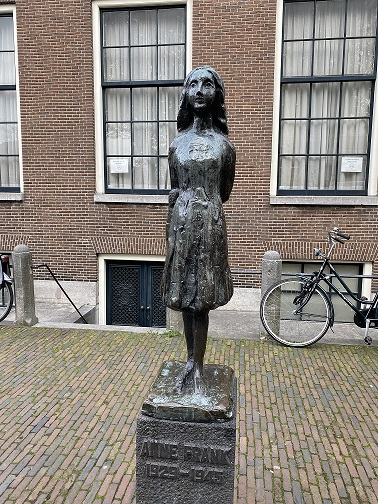

AMSTERDAM
Atracciones y experiencias únicas en Ámsterdam, la ciudad de las bicicletas
Ámsterdam, la capital de los Países Bajos, es una ciudad que combina encanto histórico con una vibrante vida contemporánea. Sus pintorescos canales, declarados Patrimonio de la Humanidad por la UNESCO, son el alma de la ciudad y ofrecen una hermosa experiencia para explorar a pie o en bicicleta. Los canales se entrelazan a lo largo de la ciudad, creando un paisaje pintoresco y romántico que te invita a perderte en sus calles adoquinadas.

La ciudad cuenta con una amplia gama de actividades para todos los gustos. Puedes visitar el famoso Museo Van Gogh y maravillarte con la colección más grande del mundo de obras del reconocido pintor. Además, puedes pasear por el animado barrio de Jordaan y disfrutar de sus tiendas de diseño, galerías de arte y acogedores cafés. Si eres amante de la música, no puedes dejar de explorar la escena musical de Ámsterdam, que ofrece una gran variedad de conciertos y festivales durante todo el año.

Entre los lugares que no puedes perderte se encuentra la Casa de Ana Frank, donde podrás conocer la historia de la niña judía que se escondió durante la Segunda Guerra Mundial. Sumérgete en la vida de Ana Frank mientras recorres las habitaciones ocultas y lees sus conmovedores escritos. También, te recomendamos visitar el Museo Rijksmuseum, que alberga obras maestras de artistas como Rembrandt y Vermeer. Podrás maravillarte con la belleza y la calidad de las pinturas expuestas en este impresionante museo.
La gastronomía en Ámsterdam es otro aspecto destacado. No puedes dejar de probar los famosos arenques marinados y las patatas fritas holandesas en los puestos callejeros. Para los amantes del queso, una visita al mercado de Albert Cuyp es imprescindible, donde podrás degustar una amplia variedad de quesos tradicionales y otros productos locales frescos. Además, no olvides probar los deliciosos stroopwafels, unas galletas holandesas dulces que son una verdadera delicia.

Moverse en Ámsterdam es fácil gracias a su eficiente sistema de transporte público. Puedes utilizar el tranvía, el metro o alquilar una bicicleta para recorrer la ciudad como un verdadero local. Los carriles bici y las calles planas hacen que pedalear sea una experiencia placentera y una excelente forma de conocer los encantos de la ciudad. Si te animas a explorar más allá del centro histórico, puedes tomar un paseo en barco por los canales y disfrutar de las vistas panorámicas de los hermosos edificios y puentes de Ámsterdam.
Azul